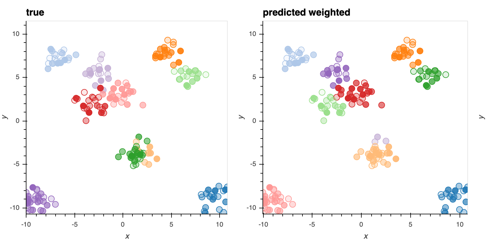
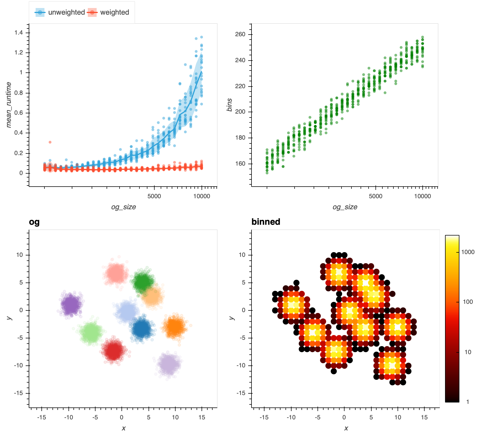

Module dpm
Weighted Dirichlet Process Gaussian Mixture Model
This repo extends sklearn.mixture.BayesianGaussianMixture to support weighted training examples.
Complies with sklearn.fit API
-
sample_weight is a vector, same length as X. It must be >=1 corresponding to duplicates or counts of observations otherwise the GMM model does not make sense.
import numpy as np
from dpm.dpgmm import WeightedDPGMM
# make some data
num_clusters = 10
N = 200
x_means = 20 * np.random.rand(1, num_clusters, 2) - 10
y = np.random.randint(num_clusters, size=N)
x = .08 * np.random.randn(N, 1, 2)
temp = np.zeros((N, num_clusters, 1))
temp[np.arange(N), y, :] = 1
x = (x + x_means * temp).sum(1)
sample_weight = np.random.randint(1, 50, size=len(x))
# train the model
model = WeightedDPGMM(n_components=20, max_iter=1000, verbose=1)
yhat = model.fit_predict(x, sample_weight=sample_weight)
True vs Inferred Clusters

Run Time Comparison to Regular Unweighted Implementation
Distribution over 20 trials. As we expect, each iteration is proportional to the number of samples. So if we bin the input then we get a speed up. More input points and larger bin sizes result in more gains (with loss of accuracy obvi).
This is with the following model parameters: max_iter=1000, tol=1e-6, covariance_type="diag"
from timeit import timeit
tol = 1e-6
num_iters = 1000
cov_type = "diag"
def run_model(x,w,seed):
model = WeightedDPGMM(n_components=20, verbose=0, max_iter=num_iters, tol=tol, covariance_type=cov_type,random_state=seed)
labels = model.fit_predict(x, sample_weight=w)
def run_model_unweighted(x,seed):
model = BayesianGaussianMixture(n_components=20, verbose=0, max_iter=num_iters, tol=tol, covariance_type=cov_type,random_state=seed)
labels = model.fit_predict(x)
def time_model(x,w=None,kind="weighted",number = 1, seed = None):
if kind == "weighted":
dt = timeit(lambda: run_model(x,w,seed),number=number)
else:
dt = timeit(lambda: run_model_unweighted(x,seed),number=number)
return dict(dt = dt/number, kind=kind, size = len(x))
out = []
r = 0
seed=None
x_df = make_data()
for i in tqdm.trange(50):
for num_points in tqdm.tqdm(np.logspace(3,4,30),leave=False):
x_sample = x_df.sample(int(num_points))
x = x_sample.loc[:,["x","y"]].values
o = time_model(x,w=None,kind="unweighted",seed= seed)
o["og_size"] = int(num_points)
out.append(o)
x_df_rounded = x_sample.round(r).groupby(["x","y"]).size().to_frame("weight").reset_index()
x = x_df_rounded.loc[:,["x","y"]].values
w = x_df_rounded.loc[:,"weight"].values
o = time_model(x,w=w,kind="weighted",seed = seed)
o["og_size"] = int(num_points)
out.append(o)

Expand source code
"""
.. include:: ../README.md
"""Sub-modules
dpm.dpgmm